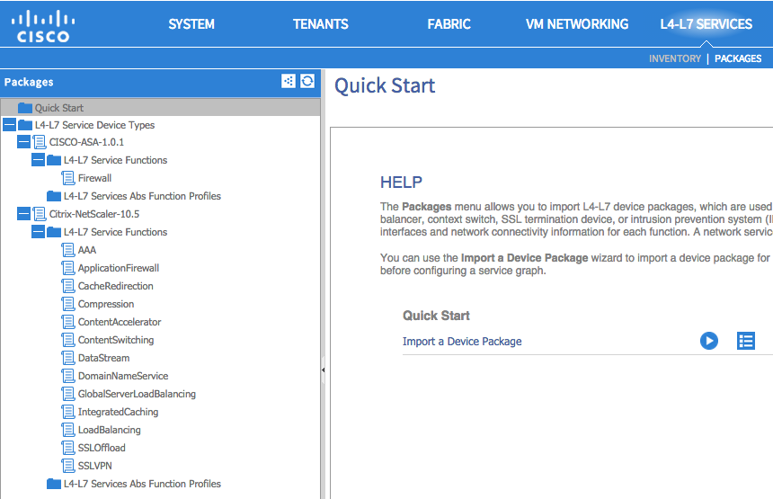
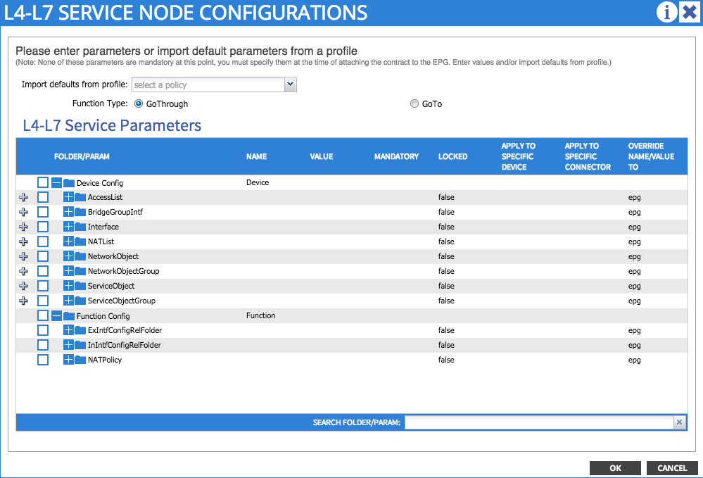
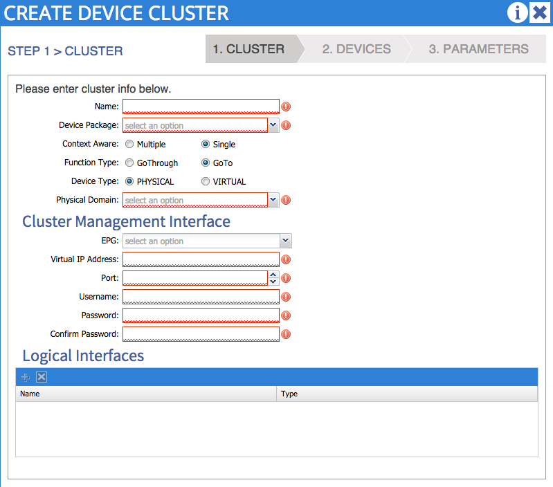
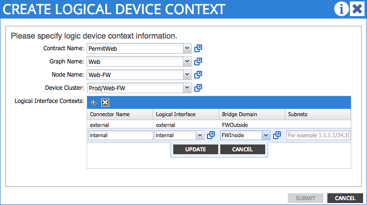
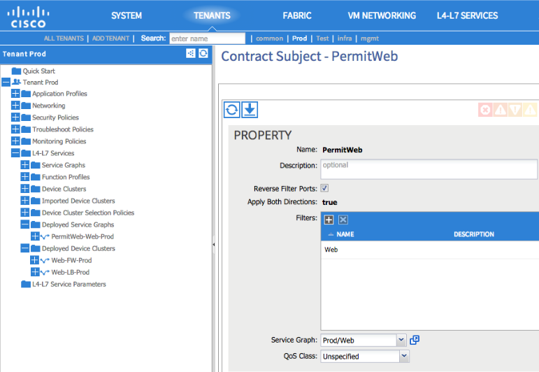

L4-L7 Service Insertion¶
Overview¶
This chapter covers the common troubles encountered during L4-L7 service insertion with the ACI fabric. An overview of what should happen and the verification steps used to confirm a working L4-L7 service insertion are covered first. The displays taken on a working fabric can then be used as an aid in troubleshooting issues when service graph and device cluster deployment failed.
The Cisco ACI and the APIC controller are designed with the ability to provide automated service insertion while acting as a central point of policy control within the ACI fabric. ACI policies manage both the network fabric and services appliances such as firewalls, load balancers, etc. The policy controller has the ability to configure the network automatically to allow traffic to flow through the service devices. In addition, the policy controller can also automatically configure the service devices according to the application service requirements. This approach allows organizations to automate infrastructure configuration coordinated with service insertion and eliminate the challenge of managing all the complex traffic-steering techniques that are used by traditional service insertion configuration methods.
When a service graph is defined though the APIC GUI, the concept of “functions” are used to specify how traffic should flow between the consumer EPG and the provider EPG. These functions can be exposed as firewall, load balancer, SSL offload, etc. and APIC will translate these function definitions into selectable elements of a service graph through a technique called rendering. Rendering involves the allocation of the fabric resources, such as bridge domain, service device IP addresses, etc. to ensure the consumer and provider EPGs will have all necessary resources and configuration to be functional.
Device Package¶
The APIC needs to communicate with the service devices to define and configure the user-specific functions according to the “communcations method” the service device understands. This method of translation happens between the APIC and service devices by utilizing a plug-in or device package installed by the administrator. The device package also includes a description of the functions supported by the device package and the mode that the service device is utilizing. In ACI terminology, a service appliance can operate in two modes:
- Go-To Mode - aka Routed mode. Examples include L3 routed firewall or load balancer, or one-arm load balancer.
- Go-Through Mode - Transparent mode. An example would be a transparent L2, or bridged) firewall.
The illustration below shows some examples of device package functions.
{kind=link}
Service Graph Definition¶
When the service graph definitions are being configured, the abstract graph needs to stitch together the consumer and provider contract. The connectors between the Function Node have two connector types:
- L2 - Layer 2 connector. Example includes ACI fabric that has L2 adjacency between EPG and the transparent firewall’s inside interface.
- L3 - Layer 3 connector with Unicast routing. Example: ACI fabric will act as the default gateway the outside interface of the ASA transparent firewall.
Node name - this will be used later on during before the service graph is rendered.
Adjacency
Function Type
BD Selection
L2
Go-To
Disable routing on BD if the routing is disabled for the connection.
L3
Go-To
Routing must also be enabled within the BD.
L2
Go-Through
Disable routing on BD if the routing is disabled for the connection.
L3
Go-Through
Routing settings on “shadow” BD is set as per the routing on connection.
Once the abstract graph is instantiated, the function of the service devices can be configured via GUI, REST or CLI. These functions include firewall or load balancer configurations such as IP addresses of the interfaces, access-list, load balancer monitoring policy, virtual IP, etc.
The illustration below shows the L4-L7 Function mode and empty Service Parameters.
{kind=link}
Concrete Device and Logical Device¶
The service graph also contains the abstract node information. The APIC will translate the definition and functions from the abstract graph into the concrete devices that are connected onto the ACI fabric. This may raise the question of why there is a logical device and a concrete device. The way this works is the concrete devices are the standalone appliance nodes, but the devices are typically deployed as a cluster, or pair, which is represented as a logical clustered device.
The following parameters are mandatory to create the Concrete Device:
- Device identity such as IP address and login credential of the concrete device.
- Logical interface to actual interface mapping, including guest VM virtual network adapter name.
The following parameters are mandatory to create the Logical Device Cluster:
- Select the device type - physical or virtual.
- Device identity such as IP address and login credential of the logical device.
- Logical interface name and function.
The illustration below shows the Logical Device Cluster configuration screen.
{kind=link}
Device Cluster Selector Policies¶
The last step before the service graph can be rendered is to associate the service graph with the appropriate contract and logical device. For example, the Create Logical Device Context screen is where the association of contract, graph, node and cluster is built between the “PermitWeb” contract, “Web” graph, “Web-FW” node, “Prod/Web-FW” device cluster.
The illustration below shows the Logical Device Context configuration.
{kind=link}
Rendering the Service Graph¶
In order to render the service graph, association needs to happen between the appropriate contract and subject to the correct L4-L7 Service Graph.
If the service graph is able to deploy, the service graph instance and virtual device will be seen as deployed in “Deployed Service Graphs” and “Deployed Device Clusters”. The illustration shows the working and rendered service graph.
The illustration below shows where to attach the service graph to the contract.
{kind=link}
Problem Description¶
The service graph is not rendering and will not deploy after the service graph is attached to a contract.
Symptom 1¶
When clicking the logical device cluster, the Device State is in “init” state.
Verification¶
The “init” state indicates there is a communication issue - the APIC controller cannot communicate with the service device. Faults under the Logical Device context should be seen. A following fault code from an ASA logical device context shows communication between APIC and service device:
F0324 Major script error : Connection error : HTTPSConnectionPool(host='10.122.254.39', port=443): Max retries exceeded with url: /admin/exec/show%20version%20%7C%20grep%20Cisco%20Adaptive%20Security%20Appliance%20Software%20Version (Caused by <class 'socket.error'>: [Errno 101] Network is unreachable)
This fault can be resolved by verifying the connectivity between the APIC and the service device with the following:
- Ping the service device from the APIC CLI to verify reachability
- Verify login credentials to the service device with the username and password supplied in the device configuration
- Verify the device’s virtual IP and port is open
- Verify username and password is correct in the APIC configuration
Symptom 2¶
After correcting connectivity issues between the APIC and the service device, it can be seen that a F0765 CDev configuration is invalid due to cdev-missing-virtual-info fault has occurred.
Verification¶
After verification of the network connectivity between APIC and the service appliance (in this case the service appliance is a VM), it is necessary to ensure the service VM name matches the vCenter console, and the vCenter name matches the Data Center name.
Symptom 3¶
Seeing a fault defined as F0772 LIf configuration is invalid due to LIf-invalid-CIf in the Logical Device context.
Verification¶
First, it is necessary to define what are the items indicated called the LIf and the CIf. LIf is the logical interface and CIf is a concrete interface. With this particular fault, the Logical interface is the element that is not rendering properly. This is where the Function Node maps the logical interface to the actual, or concrete, interface to form a relationship. F0772 means one of the following:
- The Logical interface is not created
- The Logical interface is not mapped to the correct concrete interface.
Symptom 4¶
After fixing the previous fault, F0772, there may be an additional fault, F0765 Cdev configuration is invalid due to cdev-missing-cif.
Verification¶
This fault indicates that the CIf, concrete interface, is missing from the concrete device. This can be checked under the concrete device configuration under L4-L7 Services->Device Clusters->Logical Device->Device->Policy to verify the necessary concrete interfaces have been configured.
Symptom 5¶
When deploying the service graph, it is possible to see a fault defined as F0758 Service graph could not be rendered due to following: id-allocation-failure.
Verification¶
When deploying service device VMs in a hypervisor, these devices are like the normal virtual machine creation in that they will be placed into their own EPG that is mapped to the BD where the VM resides. When the service graph is rendered by the APIC, it will allocate the VLANs from the VMM pool assigned during logical device cluster creation. If the dynamic VLAN pool that is associated with the VMM does not have enough VLANs allocated, it will fail and raise fault F0758.
This error can be corrected by allocating additional VLANs into the dynamic VLAN pool that is used by the VMM.
Symptom 6¶
All faults seem to be cleared but the service graph will still not render, and no faults are raised. In addition, verification of the contract shows it has been associated with the appropriate service graph. The filter is also defined and associated to the correct contract.
Verification¶
Go to consumer EPG or External Bridge Network and the provider EPG. It needs to have configured the correct EPG or External Bridge Network as the consumer and provider. If the EPG is configured as both consumer and provider, the L4-L7 graph will not be rendered.
Symptom 7¶
The service graph is trying to render, but it fails and raises the fault F0758 Service graph could not be rendered due to following: missing-mandatory-param.
Verification¶
This fault is associated with the Function Node configuration. It would be caused by one or more missing mandatory parameters, or one or more missing mandatory device configuration parameters:
- Check the Function Node configuration and verify if any Mandatory parameter with “true” is missing.
- Check under the actual service device configuration and identify if any Mandatory parameter is missing. One example might be seen when configuring the ASA firewall and the “order” parameter the access control entry is a required field even thought it is not marked as required.
Symptom 8¶
In the example the Cisco ASAv is being used, and traffic is not passing through the service device. After inspecting the Deployed Device Cluster, there is a fault, F0324 Major script error: Configuration error:.
Verification¶
This fault is related to the Function Node configuration and it indicates that a passed configured parameter in rendering was not accepted by the service device. Examples might include configuring ASAv transparent mode in the policy while the firewall is configured in routed mode, or configuring the ASAv security level to 200 when the only acceptable values are from 0 to 100.